1971
1953 and Newer GM Lock Cylinder Code Breakdown.
1953 and Newer GM Lock Cylinder Code Breakdown Continue reading
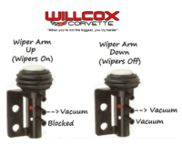
1969-1972 Corvette Windshield Wiper Arm Relay Valve. How the Valve Works
Below is a picture that shows you how the 1969-1972 Corvette Windshield Wiper Arm Relay Valve works. Always remember you do not test from the lower port, you test from the middle port. If the valve is in the open … Continue reading
Homemade Tool Of the Trade, 1963-1975 Deck Lid Spring Tool
Willcox This tool was originally made years ago in our shop from old spare parts. We decided that since the other reproduction tools are discontinued we would fab up a few for the website and see if they sell. … Continue reading
Alternator Mounting Big Block with Power Steering 65-74
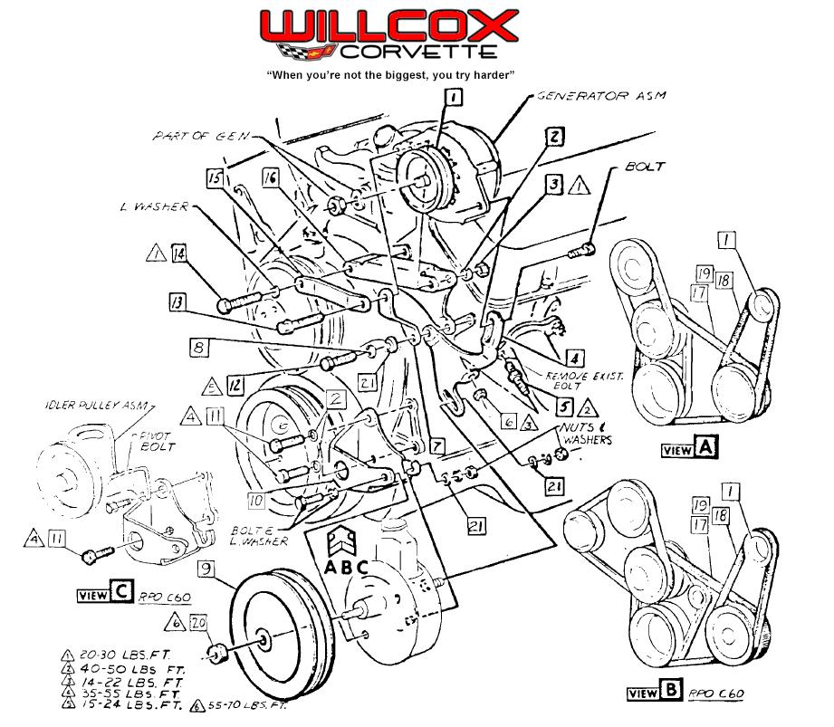
1968-1982 Corvette Speedometer Chart with AT
at speedo chart.securedpdf
1968-1979 Corvette Window Crank Assembly With Manual Windows
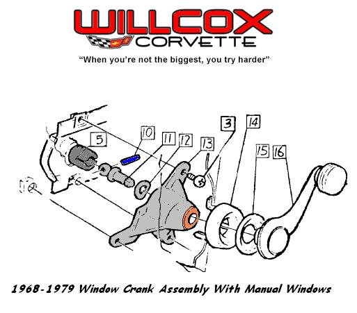
1968-1975 Corvette Convertible Rear Bow Screw Picture
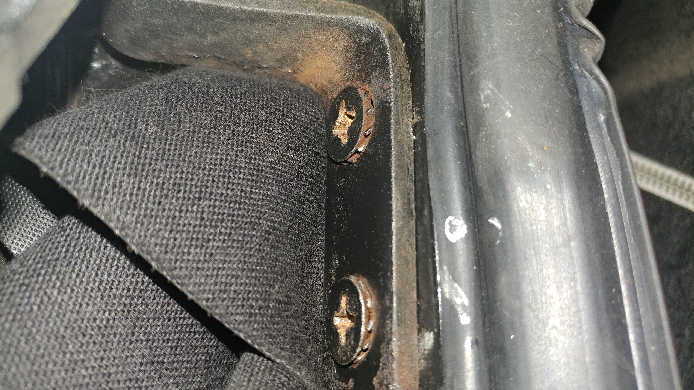
Temperature Gauge Testing Wells TU5 first three
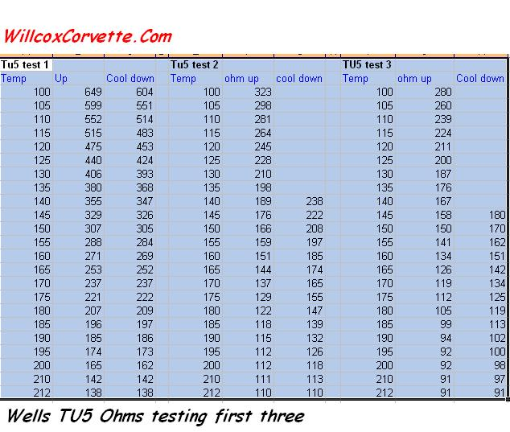
1970-1977 Corvette Door Glass Rear Weatherstrip Installation
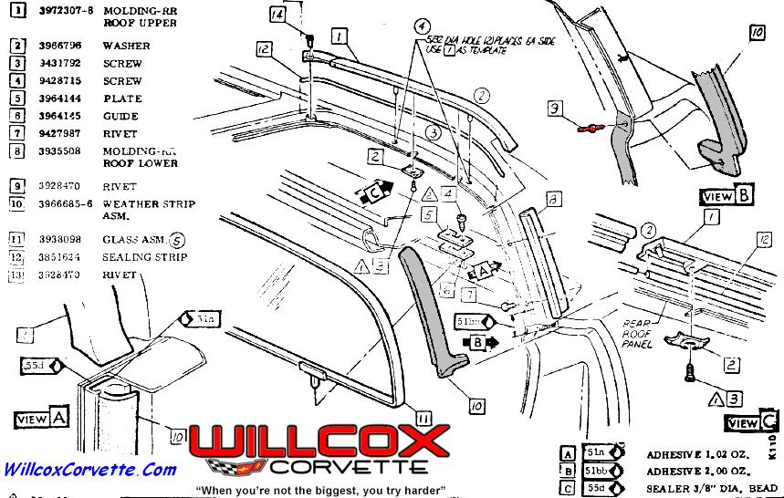
1968-1977 Door Glass Rear Weatherstrip Picture
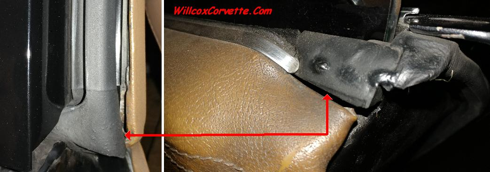
1968-1976 Ammeter Testing (Amp Gauge)
To test: A quick test would be a deflection test in the car. With the key turn to the on position, pull the headlamp switch, turn on the blower motor, and if you have power windows push the power window … Continue reading
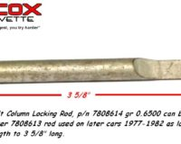
1969-1976 Steering Lock Rod
The 1969-1976 steering lock rod is discontinued and very hard to find these days. The original part number was 7808614, but the later style lock rod used on 1977-1982 p/n 7808613 cars will work and while exactly the same on … Continue reading
1969-1982 Corvette Upper Steering Shaft and Knuckle Picture.
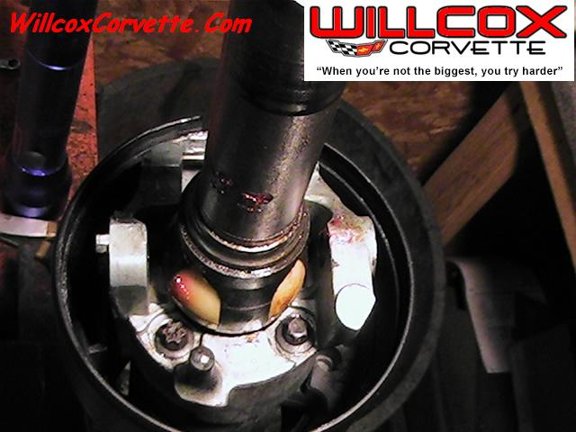
1968-1992 Corvette Steering Rack Spring Installation Picture
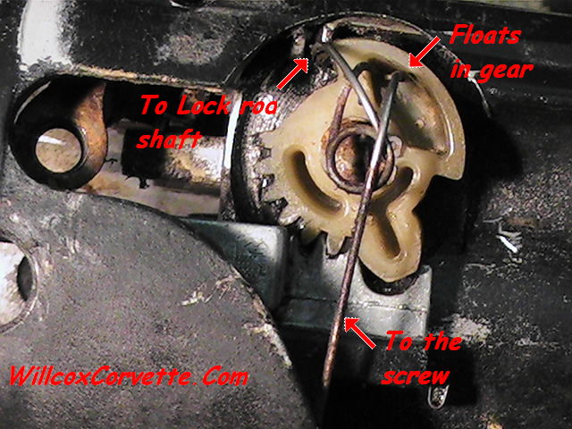
1969-1975 Corvette Turn Signal Switch Original Wire Connection Location and Color With Tilt Wheel
1963-1982 Corvette Cross Member Welds (If it’s welded on the blue lines, it’s been hit)
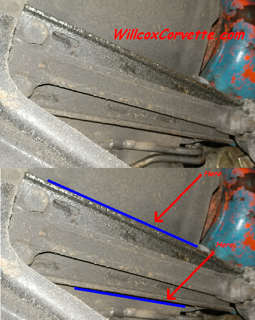
1970-1982 Corvette Fuel S Hose Info
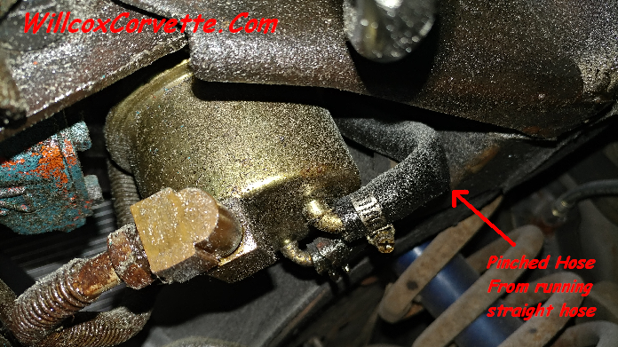